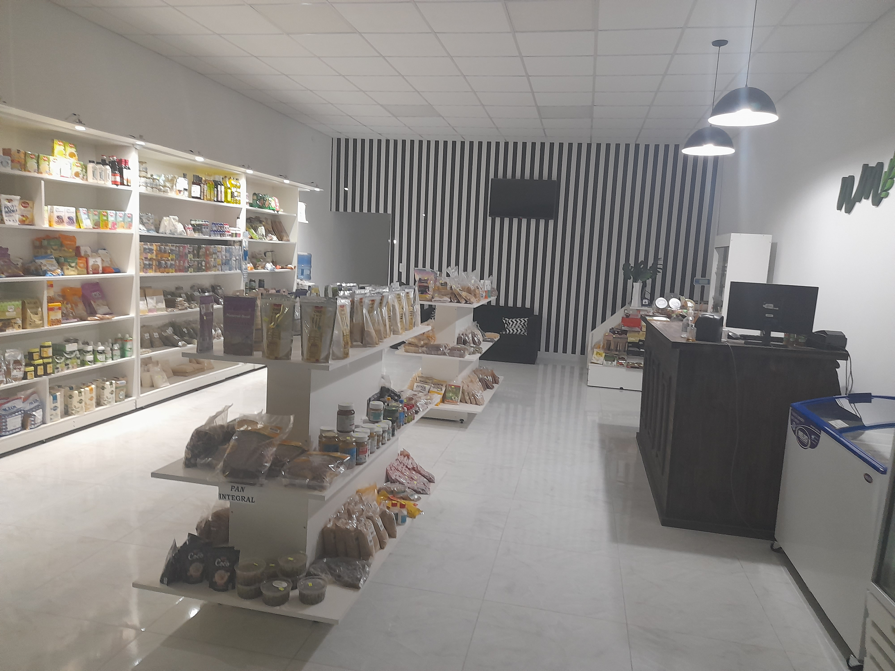

¿Quienes somos?
Somos una tienda de productos saludables
Contamos con productos natuales y congelados de la mas alta calidad
Brindamos atencion personalizada a cada paciente a cargo de nuestra Licencia en Nutricion

Somos una tienda de productos saludables
Contamos con productos natuales y congelados de la mas alta calidad
Brindamos atencion personalizada a cada paciente a cargo de nuestra Licencia en Nutricion
Ya que "somos lo que comemos",
queremos que no solo puedas tener una buena salud a travez de tu alimentacion,
sino que puedas disfrutar cada comida.
Queremos romper el mito de que ciertos alimentos son malos y engordan.
NO!
La clave esta en saber que alimentos comer y en que medida
Nos encontramos en la localidad de Santa Sylvina en la provincia del Chaco
Pero si no podes venir, no te preocupes.
Hacemos envios a todo el pais.
Ademas brindamos consultas y planes alimenticios en forma on-line